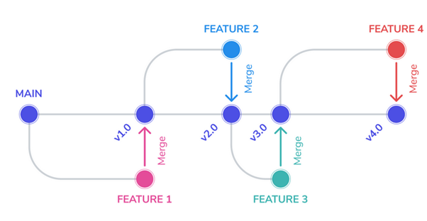
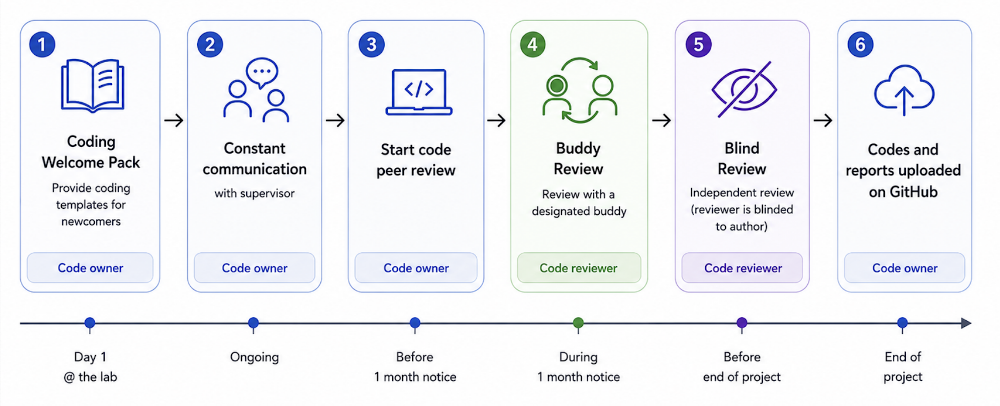

Chapter 4: Open Source Software and Tools for Neuroscience
Authors: Mar Barrantes-Cepas, Eva van Heese, Eva Koderman, Diana Bocancea, Lucas Baudouin; Reviewer: Chris Vriend
This chapter...
- provides an introduction to coding fundamentals;
- shares practical pointers on code annotation;
- advises on version control using git/github;
- suggests a workflow for code review and testing;
- supplies lists of open-source packages and tools for data processing & visualisation, quality control, and anonymisation.
1. Reproducible Science
In this chapter, we’ll show you practical tools and software to help make your neuroscience research more reproducible. By using scripts instead of graphical user interfaces, open source software, and version control, you’ll not only make your work easier to manage, but also ensure others can replicate your findings and easily collaborate with you. This way you can easily follow the FAIR principles for improving Findability, Accessibility, Interoperability, and Reusability (see GO FAIR for more details on the FAIR principles).
Reproducibility is at the core of good science – it helps move the field forward by making sure discoveries can be verified and expanded upon. Increasing reproducibility in neuroscience can be approached in two ways: ‘top-down’, where institutions reshape incentives and frameworks (i.e. changes at the meso-level, see here, and from the ‘bottom-up‘, where individual researchers adopt better practices. While both approaches are necessary, this chapter focuses on the bottom-up approach, providing you with the tools and guidelines to enhance your work.
Although sharing data in clinical neuroscience can be challenging due to privacy, legal concerns and logistical barriers, this shouldn’t be an excuse not to share your code and materials. Developing your work with this in mind, you can help promote transparency and reproducibility by ensuring that your code is shareable and accessible to others.
2. Coding Fundamentals
You might already know much of what will be discussed in the following section. Should that be the case, you can browse through the headers to double-check your knowledge! Otherwise, here is a summary of some concepts you need for best coding practices.
2.1) Basic concepts about programming
A Graphical User Interface (GUI) is a digital interface that allows users to interact with graphical elements such as icons, buttons, and menus (e.g., SPSS or MATLAB). GUIs are user-friendly because they provide intuitive visual cues for navigation and task execution. However, they are less effective for reproducibility, as it can be challenging to track or recall the exact steps and parameters used during analysis if you don’t note them somewhere. Moreover, scripts provide more flexibility, can optimise compute efficiency through job parallelisation, and require less manual work, resulting in greater control over your data.
To address these issues, it is advisable to use scripts for your methodology. Scripts provide a record of all actions taken and parameters used, making it easier to reproduce and share your work with others. Fortunately, many software packages and pipelines also offer the option to execute commands directly through a terminal. For instance, if properly installed, FSL commands can run from the terminal. To learn more about this, consult the log files or documentation specific to the tool you are using.
2.2) Programming languages
In programming, just as in everyday life, a wide array of languages are available for writing your scripts—more than you might imagine! Check out the List of programming languages - Wikipedia. The most commonly used languages for data analysis in neuroscience are Bash, C++, Python, MATLAB, and R. An additional language that can help with your publication manuscript is LaTeX. The choice of language often depends on your personal preferences and the specific needs of your project. In this section, we outline the main differences between these languages, discuss Open Science-related considerations, and offer tips for maximizing the benefits of each.
Bash is excellent for automating command-line tasks and system administration. It enables you to execute and automate terminal commands and call various tools through scripts.
C++ is used for computationally intensive projects, and most command-line tools are programmed with it due to its performance capabilities.
Python, MATLAB, and R are high-level languages, meaning they are easy to use, understand, portable, and independent from specific hardware. Python is a versatile and user-friendly programming language, making it an ideal choice for data analysis. R is designed specifically for statistical analysis and data visualisation, making it popular among statisticians and data scientists. MATLAB excels in numerical computation and visualisation but requires a paid licence.
A programming tool that is not strictly speaking a data analysis pipeline development tool but can still help you in the preparation of your manuscript for publication is LaTeX. Some journals even offer their LaTeX templates! It is specifically useful when your manuscript contains formulas, graphs that are still in the making, or pieces of code, since it allows you to easily add everything beautifully without spending too much time looking for the correct character. Different editors, such as Overleaf or Visual Studio Code, will enable you to use it. Some extra tools that will enhance your experience with LaTeX are Detexify, which helps to find characters you might not know how they are called, or a Tables converter into LaTeX format.
An extra thing to consider when choosing your programming language is your carbon emission when coding. High-level languages, like Python, tend to consume more energy and need more time to run than compiled languages, like C.
2.3) Other development tools
But there’s more to consider! Besides programming languages, you’ll also need to manage libraries.
Libraries are collections of pre-written code that extend the functionality of a programming language, simplifying complex tasks. Just as programming languages have different versions, libraries can also have multiple versions due to updates and bug fixes. When multiple people work on the same coding file (see below - Version control), it is important to use consistent versions of programming languages and libraries across the team. In addition, different versions of libraries may introduce, change, or remove functions, so a specific function might only work with a particular version due to compatibility requirements. Software tools can act as GUIs to simplify data analysis. However, tools can be built using programming that is not open source (i.e., Matlab) and therefore the tools themselves are also not open source.
Virtual environments and containers are tools used in software development to create isolated and controlled environments for running applications and managing dependencies.
A virtual environment in Python is an isolated environment that allows you to install and manage dependencies for a specific project without affecting the global Python installation or other projects. It helps ensure that each project can have its dependencies and versions, avoiding conflicts between projects.
A container is an isolated unit, and is much more comprehensive tool that isolates not just the programming environment but the entire software environment, including the operating system, system libraries, runtime, and application code - making it more versatile for deploying and running consistent environments across different systems. Containers offer several advantages (check this page):
- Portability and consistency: Whether a container runs on a developer’s laptop or server, the bundled application will run consistently in various environments.
- Resource efficiency: Containers are lightweight and use less memory and CPU compared to traditional virtual machines.
- Flexibility: Individual components of an application can be updated, scaled, or deployed independently, leading to a more flexible development and deployment process.
Containerised software is particularly useful in neuroscience research because it guarantees that processing pipelines run reliably and uniformly across different computing environments without researchers worrying about variations in software dependencies or system configurations, for example in collaborations between different institutes. This consistency is crucial for reproducibility in research.
Useful open-source tools within science also include LibreOffice and Inkscape. LibreOffice is a free and open-source alternative to Microsoft Office applications like Word, PowerPoint, Excel, and Access. It offers similar functionalities for document creation, presentations, spreadsheets, and database management. For poster creation or data visualisation, you can opt for Inkscape. It is a free and open-source vector graphics editor that is widely used for creating and editing scalable vector graphics (SVG) files.
2.4) Tips and tricks on the coding fundamentals
To make your project as open sciency as possible, we provide a few tips:
- GUIs might help you get acquainted with the preprocessing or analysis steps. However, once you have that understanding, it might be better to switch to scripts.
- Opt for open-source programming languages and tools that don’t require a paid license. While MATLAB might be available through your institute, remember that someone still pays for it.
- If you need a specific tool available in MATLAB, consider finding an open-source alternative. For example, bctpy is an open-source Python version of the MATLAB-based tool Brain Connectivity Toolbox.
- If you're developing a tool, open-source software can be beneficial: Even if you're used to MATLAB, exploring other languages like Python, R, or C++ could be a valuable opportunity to expand your skills!
- Opt for open-source tools that can be easily put in a container. For example, Python with Docker is far more container-friendly than MATLAB.
- To ensure consistency and avoid issues, it's crucial to keep track of the versions of both the programming language and the libraries you use. When using Python, we recommend using virtual environments to manage multiple project environments and to keep your libraries and their versions organised. This approach will make it easier to handle libraries, maintain your projects, and share them with others.
3. Code annotation and Version Control
This section offers guidance on optimising version control and annotation practices. It covers best practices for streamlining version control, how to integrate them within your team, and the ideal workflow to adopt for maximum efficiency.
3.1) Code annotation
When working on a script, it is important to annotate your code. Annotation is essential to make code understandable, discoverable, citable, and reusable. More specific to code annotation, it is important to keep in mind the following:
- At the top of your script, you should describe the aim of the script
- Declare who wrote the code and when. Is it finished?
- Has anyone reviewed this code? When?
- Declare required libraries with their versions or create a requirements.txt file for python or R that contains library version and can be used to create a virtual environment
- Describe the desired input and expected output of your code
- Each programming language comes with its own sets of syntax standards. Therefore, beware of specific programming languages naming conventions
- Annotate your code using Docstrings
- Leave useful comments throughout the script to help others understand your code (i.e., what does a function do?). Avoid unnecessary comments (i.e., if the function’s role is already evident from the function name).
To help get you started, you can check out these script templates, guidance, and examples. This tool is also useful for formatting your code (and making it beautiful!) - Black Vercel.
3.2) Git and GitHub
Version control is a method used to document and manage changes to a file or collection of files over time. It allows you and your collaborators to monitor the history of revisions, review modifications, and revert to previous versions when necessary. This is useful, especially when working together on a script. The most prevalent version control system that can help with that is Git.
Git is a version control system that tracks file changes. This can be helpful when working on your own scripts, as well as for the coordination of work among multiple people on a project. GitHub and GitLab are web-based platforms that host Git repositories, along with additional features like issue tracking, code reviews, and continuous integration. The main difference between them is that GitHub is more focused on open-source collaboration and has a large user community, while GitLab offers more built-in tools and is known for its flexibility in deployment options, including self-hosting. Both of them allow the creation of private and public repositories.
If you want to learn more about pros and cons and the current status of Git(-related) tools at Amsterdam UMC, please check this link. Check with your (co)supervisors about the best option to use or if they already have an account for the group. If the account hasn’t been created yet, take the initiative and set it up yourself by following the simple instructions below.
How to create your own GitHub account
To create a GitHub account, link it with Git on your local machine, and verify the connection, follow these steps:
-
Create a GitHub Account:
- Go to github.com and click Sign up.
- Enter your email, password, and username. Then verify your email when prompted.
- After completing the sign-up steps, your account will be created.
-
Install Git (if not already installed):
- Download Git from git-scm.com and follow the installation instructions for your operating system.
-
Link Git with Your GitHub Account:
- Open a terminal or command prompt and configure your Git username and email (these should match your GitHub account):
git config --global user.name "YourGitHubUsername"git config --global user.email "your_email@example.com" - Generate an SSH key (if you want to authenticate using SSH, recommended for security):
ssh-keygen -t ed25519 -C "your_email@example.com" - Press Enter through the prompts to generate the key pair.
- Add the SSH key to your GitHub account
- Copy the SSH key to your clipboard:
cat ~/.ssh/id_ed25519.pub - Go to your GitHub profile, click Settings → SSH and GPG keys, and paste the SSH key.
- Open a terminal or command prompt and configure your Git username and email (these should match your GitHub account):
-
Verify the Connection:
- In the terminal, test the connection with GitHub:
ssh -T git@github.com - If successful, you'll see a message like:
Hi username! You've successfully authenticated.
- In the terminal, test the connection with GitHub:
Now Git is linked to your GitHub account, and you can push, pull, and collaborate on projects directly from your local machine. Not sure what these terms mean? Check below!
How to use Git & GitHub
Once you have a good feeling of the Github lingo, the version control should be easy peasy. Here are some basics on the terminology and a tutorial to help get you started:
- A repository (or "repo") is a central location where a project's code, along with its version history, is stored and managed. It is essentially a folder in which your project's files and folders reside, along with all the necessary information to track changes, collaborate with others, and version control the project over time.
- A branch is an independent line of development within a repository. It allows you to work on different features, bug fixes, or experiments without affecting the main codebase. By default, every repository starts with a ‘main‘ (or previously ‘master’) branch, which is typically considered the primary or production-ready branch.
- Pulling a branch means fetching the latest changes from a remote repository (like GitHub) to your local environment. It updates your local copy with any new commits made by others.
- Pushing a branch means sending your local changes to the remote repository, making them available to others by updating the remote branch. You can also opt to use a private repository which means even pushing to the remote branch won’t make the changes public.
Here is a quick tutorial to help get you started with the basics and a visual representation of a GitHub workflow.

Figure 4.1 - Visual representation of a GitHub workflow (Image source: OneSignal).
The main (or previously called the master branch) is where your code lives as the main character. All the other branches are created for the development of a specific feature (or you can think of them as side quests). After the feature development is complete and the code is fully tested and functional, you can merge it back into the main branch. Continue this process until all the feature development is complete.
Git Ignore File
Before creating a new GIT repository and linking it to GitHub or GitLab, it is EXTREMELY important to make a .gitignore file. Without it, all files in your project, including potentially sensitive or personal data, will be tracked and uploaded by default. This could lead to unintentional data exposure that cannot be shared due to privacy regulations.
To avoid this, make sure to create a .gitignore file listing all the file types and folders you want to exclude from version control. You can find more detailed guidance in the Ignoring files - GitHub Docs and browse Some common .gitignore configurations for examples.
Readme File
A README is a text file that introduces and explains a repository because no one can read your mind (yet). If you want to learn how to properly create a README file check: Make a README (they also provide templates!)
Contributing File
A CONTRIBUTING.md file is a document placed in the root of a project that provides clear guidelines for anyone who wants to contribute to the project. It explains the different ways people can help, such as reporting bugs, suggesting features, improving documentation, or submitting code, and outlines the steps for setting up the project locally, following coding standards, and submitting pull requests. Including this file helps create a welcoming environment, sets expectations, and makes collaboration easier and more organized.
Licences
To check more about licences and licensing, check Chapter 3.
3.3) Code Review and Code Test
A general code workflow should include several iterations of peer review and end with the scripts being uploaded on GitHub. Peer review ensures that the code is correct and functions well, while the publication of scripts online ensures these are shared with the wider scientific community and improves the reproducibility. In scripts, correctness refers to the code's ability to produce the intended results accurately according to specified requirements. In contrast, reproducibility ensures that these results can be consistently obtained by different users or in different environments when the same code is run with identical inputs. While correctness confirms that the code functions as intended, reproducibility guarantees that the outcomes can be reliably replicated, which is essential for validating research findings.
The general workflow of code review that ensures correctness and reproducibility is summarized in the figure below:

Figure 4.2 - Visualisation of the workflow for code review. As you might notice, there should always be a code owner and a code reviewer who have separate tasks.
For the code owner:
- Start with your script. Try to write documentation in parallel with your computations, as this will save you time and help build good habits.
- Talk to your supervisor about work ethic - are there standards on how the data should be stored? Data privacy guidelines?
- Create a GitHub account and version control your codes. At the end of your project, you should transfer your version controlled codes to the public repository.
- Talk to your supervisor / the team about potential coding checkpoints for your project (e.g. “check codes together once we have Table or Figure 1”)
- Find a suitable code reviewer at least one month before the end of your project.
- At this point, it is time to put your scripts onto an internal repository.
- You will need your own private GitHub account
- Create a branch for your project
- Open a Pull Request
- When reviewers are assigned to your codes, the material should be ready for someone else to use them (e.g. formatted, documented, with a requirements.txt, or similar for R/Matlab)
- Implement the changes suggested by the reviewers (or discuss them in person, if necessary)
- Celebrate the end of your project!
For the reviewer: Please confirm that the code is understandable and well-documented. It is not your job to rewrite the code for the code owner or to test the code’s functionality. If you have to spend too much time on it, send it back to the owner with your remarks and ask them to improve it before your final revision.
- Please check if the owner indicated the mandatory information (what the script is about, who wrote the code and when, declaring libraries with their versions)
- Code peer review tutorials suggest not revising more than 400 lines in one go. Split the job to keep your eyes fresh!
- If your revision is more on the computation/mathematical side, please ensure everything is correct, and results will not be compromised
- Please indicate your suggestions in the GitHub Pull Request. This allows us to keep track of the comments and changes
- For Python users, we strongly recommend the use of virtual environments
Additional good coding practice, in addition to the code review, is code testing. Code-based testing encompasses various methods to ensure software reliability and quality. Techniques like unit and integration testing help developers validate their code. Unit testing checks individual components of code for correctness, while integration testing ensures that combined components work together as expected.
A key element of code testing is building a solid foundation of tests that cover different scenarios and edge cases. These tests serve as a safety net, offering ongoing feedback on code functionality. By thoroughly testing, developers can catch and fix issues early, reducing the time and effort needed for debugging and maintenance.
4. Quality Assessment of Your Data
Ensuring the quality of your data is a crucial step in minimising errors and avoiding mistakes that could affect the validity of your research. This applies to all types of data in neuroscience, not just large datasets like neuroimaging, but also to more basic data such as demographics, behavioural scores, or clinical outcomes. Even seemingly simple data can contain errors that may go unnoticed without careful inspection. It’s important to invest time in performing sanity checks, validating your data, and identifying potential errors early on.
As emphasized in this chapter, adopting ‘bottom-up’ practices, like using scripts, version control, and code review/code test, can help you create more reproducible workflows which can significantly increase the reliability of your findings. Quality assessment is at the core of these practices - helping you catch errors, identify inconsistencies, and ensure that your data is solid, facilitating transparency and collaboration. Cleaning and assessing your data thoroughly can prevent small issues from snowballing into larger problems down the line. By prioritising data quality control (QC) at critical steps during your analysis, you set the foundation for reliable and reproducible research. Below we guide you through practical approaches to assess data quality, from visualizing distributions to performing neuroimaging checks, while highlighting open-source tools that make these tasks more efficient and accessible.
4.1) Packages for Data Descriptives and Visualization in Python and R
Descriptive statistics and data visualisation are critical first steps in assessing the quality and distribution of your dataset. Visualizing your data, you can quickly identify outliers, assess distributions, and spot inconsistencies that might not be obvious by the raw values. While the exact procedures are dataset and modality specific, here are some general guidelines and examples for visualizing data for quality checks, along with the tools to implement them:
- Check Distributions: Understanding the distribution of each variable is a fundamental step in quality assessment. Look for unexpected skewness, multimodal distributions, or values outside a plausible range. Visual tools: histograms, box plots.
- Look for Outliers: Outliers can indicate errors or interesting features of your data. Use scatter plots to explore relationships between variables and identify points that fall outside expected ranges. Visual tools: scatter plots, pair plots.
- Assess Missing Data: Missing data can be visualized to identify patterns and understand whether missingness is random or systematic. Visual tools: heatmaps of missing data, barplots of missing values.
- Validate Categorical Variables: For categorical data, visualize counts for each category to check for unexpected or inconsistent values. Visual tools: barplots
- Check Relationships in Multivariate Data: Assess correlations or trends between variables to identify inconsistencies. Visual tools: correlation heatmaps.
- Time Series Data: For time series data, look for gaps, trends, or anomalies over time. Visual Tools: line plots.
There are various open-source tools that provide functionalities to easily check and visualize your data:
| Tool | Language | Purpose |
|---|---|---|
| OpenRefine | N/A | Cleaning and validating structured datasets, especially for demographics or clinical data, as it allows for easy spotting and correction of inconsistencies |
| Pandas | Python | Data manipulation and summary statistics |
| Matplotlib / Seaborn | Python | Tools for creating basic (Matplotlib) and advanced (Seaborn) visualizations |
| Plotly | Python | Creating interactive and dynamic visualizations |
| Pandas profiling | Python | Automates the generation of detailed data reports, useful for data exploration |
| dplyr | R | Simplifies data manipulation and allows for descriptive statistics calculation |
| ggplot2 | R | High-quality visualization tool widely used for creating publication-ready plots |
| janitor | R | Cleaning messy data, removing empty rows, renaming columns, and identifying duplicates |
| DataExplorer | R | Generating comprehensive data reports to identify missing data, outliers, and distributions |
4.2) Quality Control of Neuroimaging Data
Quality control of structural neuroimaging data is important as errors in brain segmentation can lead to inaccurate volume/thickness estimates. Visual inspection is still the gold standard, but as dataset sizes grow, this approach becomes more time-consuming. Thus, automated QC tools are becoming more necessary. Researchers are actively developing tools to handle QC across different imaging modalities, and while many tools are still in development, there are some noteworthy options already available. Automated QC methods are an ongoing area of development, and it's essential to stay updated on new tools that can improve the QC process in neuroimaging.
| Software/Tool | Purpose | Openness? |
|---|---|---|
| MRIQC | Open-source tool designed to perform automated quality control on MRI datasets, providing reports on data quality across various MRI metrics. | fully open |
| QSIPREP | Quality control and processing of diffusion-weighted MRI data. | fully open |
| ENIGMA QC Protocols | Protocols and guidelines defined by the ENIGMA consortium for performing visual quality checks on segmented MRI data from Freesurfer. | fully open |
| SPM - Matlab | Offers visualization tools for quality checking segmentation outputs. Extensions like CAT12 provide additional QC functionalities. | Tool itself is open, but requires Matlab (paid licence) |
| SPM - Python | SPM tool described as above but translated to Python and made fully accessible. | fully open |
| fMRIPrep | While primarily used for preprocessing, fMRIPrep includes built-in QC features that help flag problematic scans in fMRI datasets, offering both visual reports and metrics for each scan. | fully open |
| FSQC | Open-source tool designed to perform quality assessment of FreeSurfer outputs. | fully open |
5. Anonymising Data: Defacing and Editing Headers
To anonymize and deface brain scan data (typically MRI or CT scans in DICOM or NIfTI formats), several well-established tools are used in neuroimaging research. These tools help remove or obscure facial features and metadata that could be used to identify participants, which is essential for complying with privacy regulations. Theyers and colleagues (2021) found that the defacing algorithms provided below vary in their defacing efficiency. Specifically, their analysis shows that the afni_reface and pydeface had the highest accuracy rates. Keep this in mind when choosing your own defacing header!
| Tool Name | Description & Link | Openly Accessible |
|---|---|---|
| pydeface | Defaces NIfTI MRI scans using a pre-trained face mask | ✅ Yes |
| mri_deface | Part of FreeSurfer; uses anatomical templates to remove facial features | ✅ Yes (FreeSurfer required) |
| fsl_deface | FSL tool to deface T1-weighted images using probabilistic masks | ✅ Yes (FSL license) |
| dcmodify | DCMTK command-line tool to modify or anonymize DICOM headers | ✅ Yes (Source-available) |
| dcm2niix | Converts DICOM to NIfTI and can remove private metadata | ✅ Yes |
| dicom-anonymizer | Java-based GUI tool for anonymizing DICOM files | ✅ Yes |
6. Open Neuroimaging Analysis Tools
Within the neuroimaging field of neuroscience, many tools are open source Some require a free licence that can be requested. We’ll review a selection of often applied software and tools:
| Software/Tool | Type of Data | Purpose | Openness? | Recommended Tutorials and Resources |
|---|---|---|---|---|
| FSL | Several types of MR images | Process or view images from a variety of modalities | fully open | FSL Course - YouTube |
| FreeSurfer | Anatomical T1w/T2w images | Perform cortical, subcortical and subfield parcellation | free licence required (request here) | Introduction to FreeSurfer - YouTube |
| fMRIPrep | Functional images | Perform fMRI preprocessing steps | fully open | How to Use fMRIPrep - YouTube |
| ANTs | Several types of MR images | Perform registration, segmentation, and brain extraction of different images | fully open | Andy's Brain Book - Advanced Normalization Tools (ANTs) |
| CONN | Functional images | Perform functional connectivity analysis | fully open | conn-toolbox - YouTube |
| DIPY | Diffusion images | Perform analysis on diffusion images | fully open (Python toolbox) | |
| EEGLAB | EEG and other signal data | Perform signal analysis (from preprocessing to statistical analysis) | Tool itself is open, but requires Matlab (paid licence) | EEGLAB - YouTube |
| NeuroKit2 | EEG and other signal data | Perform signal analysis (from preprocessing to statistical analysis) | fully open (Python toolbox) | |
| MNE-Python | EEG signal processing | Perform signal analysis (from preprocessing to statistical analysis) | fully open (Python toolbox) | MNE YouTube tutorial |
| PyNets | Structural and functional connectomes | Perform sampling and analysis for individual structural and functional connectomes | fully open (Python toolbox) | |
| Spinal Cord Toolbox | Anatomical T1w/T2(*)weighted images | Perform automated spinal cord segmentation | fully open | Tutorials - Spinal Cord Toolbox documentation |
| SPM | Time-series (fMRI, PET, SPECT, EEG, MEG) | Construction and assessment of spatially extended statistical processes used to test hypotheses about functional imaging data | Tool itself is open, but requires Matlab (paid licence) | Andy's Brain Book - SPM Overview |
| DSI-Studio | Diffusion images | Perform analysis on diffusion images | fully open | DSI Studio Workshop - YouTube |
| MRtrix3 | Diffusion images | Perform analysis on diffusion images | fully open | Diffusion Analysis with MRtrix - YouTube |
| CAT12 | Anatomical T1w/T2w images | Perform diverse morphometric analyses such as VBM, SBM, DBM, RBM | Tool itself is open, but requires Matlab (paid licence) & SPM | Andy's Brain Book - VBM in CAT12 |
| QSIPREP | Diffusion images | BIDS-compatible preprocessing pipeline that standardizes and automates processing of diffusion MRI data, including denoising, motion correction, and reconstruction to prepare for analysis | fully open |
References
GitHub. (n.d.). GitHub Docs. https://docs.github.com/en/